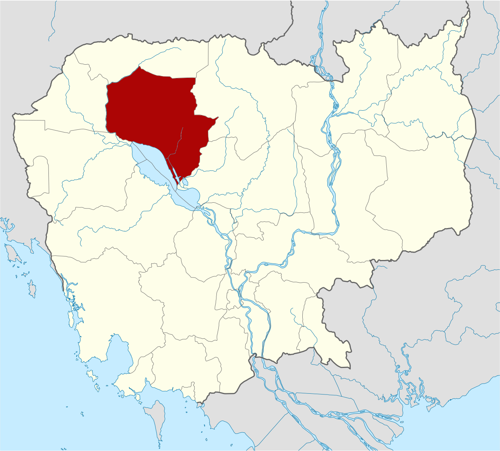
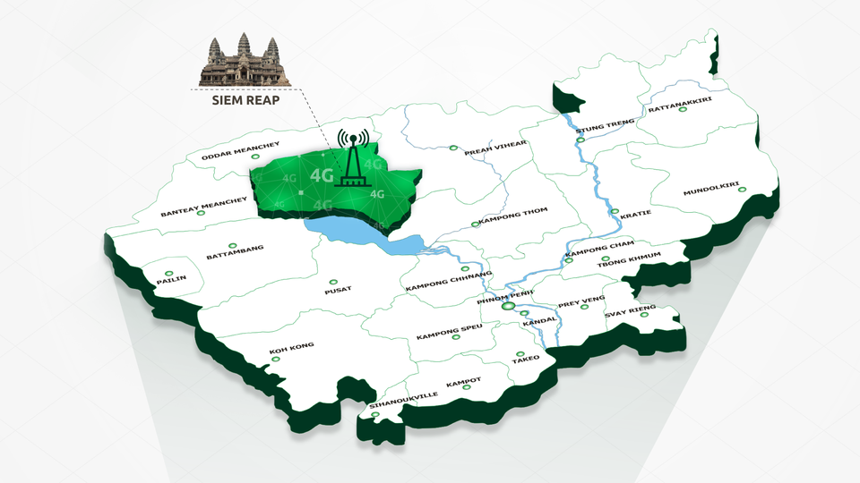
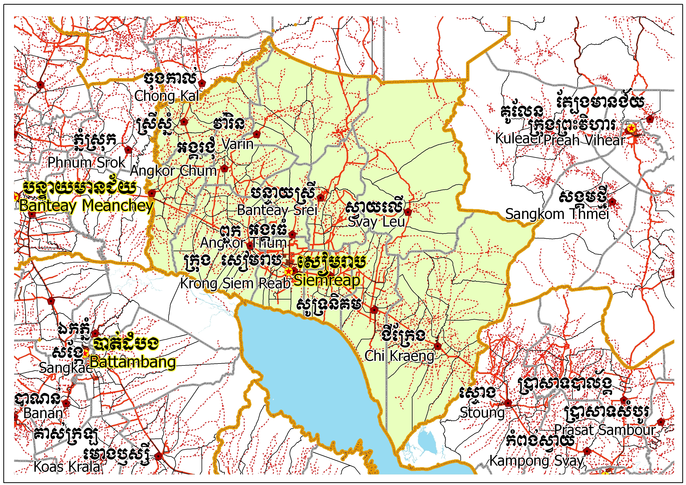
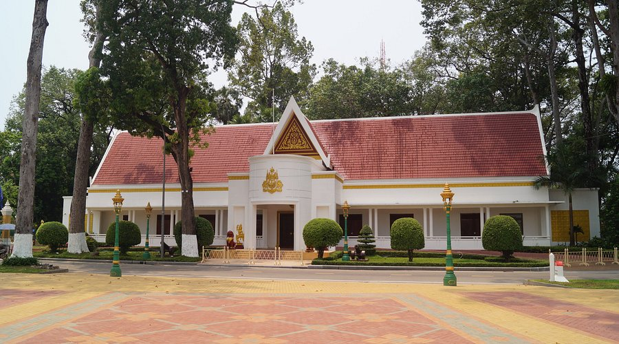
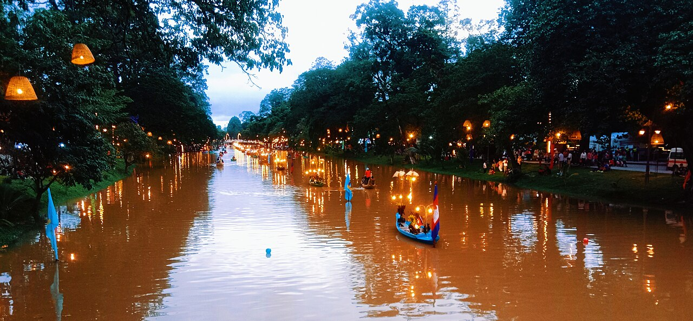
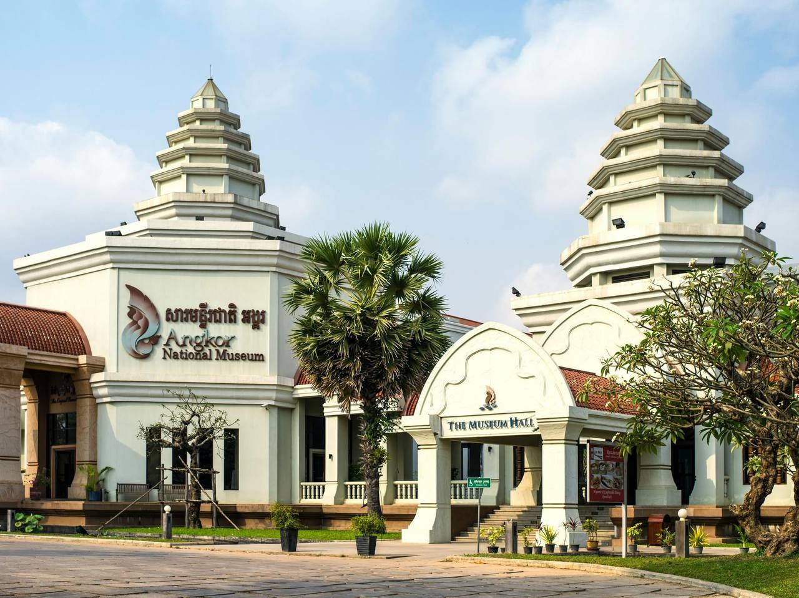

Siem Reap
← ត្រឡប់ទៅផែនទីខេត្តសៀមរាប (អង់គ្លេស : Siem Reap Province) គឺជាខេត្តមួយដែលមានទីតាំងស្ថិតនៅភាគពាយ័ព្យនៃប្រទេសកម្ពុជា។ ទីរួមខេត្តរបស់ខេត្តសៀមរាបគឺក្រុងសៀមរាបនិងក្រុងរុនតាឯក។ ខេត្តសៀមរាបត្រូវបានដាក់ឈ្មោះបែបនេះគឺដើម្បីរំលឹកដល់ជ័យជម្នះរបស់កងទ័ពខ្មែរវាយឈ្នះលើកងទ័ពសៀម នៅសម័យលង្វែកនៅក្នុងសតវត្សរ៍ទី ១៦។ សព្វថ្ងៃខេត្តសៀមរាបត្រូវបានគេស្គាល់ទូទាំងពិភពលោកថាជាទីតាំងនៃប្រាសាទអង្គរវត្តដ៏ល្បីល្បាញ។ ខេត្តនេះគឺជាតំបន់ទេសចរណ៍ដ៏សំខាន់របស់ប្រទេសកម្ពុជាដោយសារខេត្តនេះមានប្រាសាទអង្គរវត្តដ៏ល្បីល្បាញនិងប្រាសាទបុរាណដទៃទៀតជាច្រើន។ ថ្មីៗនេះក្រុងសៀមរាបកំពុងប្រែក្លាយរូបរាងទៅជាក្រុងទំនើបតាមរយៈកំណើនសណ្ឋាគារ ភោជនីយដ្ឋាន ហាងលក់ទំនិញជាដើមដែលបម្រើឲ្យវិស័យទេសចរណ៍។រមណីយដ្ឋាន បុរាណនិងប្រាសាទបុរាណជាច្រើនដែលស្ថិតនៅក្នុងក្រុងនិងក្រៅក្រុងនៃ ខេត្តសៀមរាបគឺជាគោលដៅទេសចរណ៍ដ៏សំខាន់សម្រាប់ឲ្យភ្ញៀវទេសចរមកពី គ្រប់ទិសទីទស្សនានិងសិក្សាស្វែងយល់អំពីវប្បធម៌ អរិយធម៌ និង សង្គមធម៌របស់ខ្មែរ។ តំបន់អង្គរត្រូវបានរងនូវការលុកលុយជាច្រើនដងពីពួកសៀមហើយទីបំផុតរាជធានីអង្គរត្រូវបានបោះបង់ចោលនៅក្នុងឆ្នាំ ១៤៣១។ គួររំលឹកផងដែរថារាជធានីរបស់ប្រទេសកម្ពុជាត្រូវបានប្តូរពីរាជធានីអង្គរទៅរាជធានីចតុមុខនៅក្នុងឆ្នាំ ១៤៣២ រួចបន្តទៅរាជធានីលង្វែកនិងរាជធានីឧដុង្គហើយត្រឡប់ទៅរាជធានីចតុមុខវិញនៅក្នុងឆ្នាំ ១៨៦៦។ ជនជាតិបទេសដែលបានមកដល់ប្រាសាទអង្គរវត្តមុនគេគឺអ្នករុករកជនជាតិបារាំងលោកហង់រី មូហូតនៅក្នុងឆ្នាំ ១៨៦០ (នាសម័យលង្វែកសតវត្សរ៍ទី ១៦ ក៏មានជនបរទេសខាងបស្ចឹមលោកក៏បានមកមើលប្រាសាទអង្គរវត្តរួចមកហើយដែរ)។ តំបន់សៀមរាបអង្គរគឺជាគោលដៅចម្បងសម្រាប់ភ្ញៀវទេសចរទូទាំងពិភពលោកហើយក៏ជាតំបន់ដែលសម្បូរទៅដោយសំណង់ ប្រាសាទបុរាណតូចធំជាច្រើនអនេកដែលជាទីស្ថានរបស់ពពួកអាទិទេពទាំងឡាយទាំងពួងផងដែរ។


ខេត្តសៀមរាប គឺជាខេត្តមួយស្ថិតនៅតំបន់ភាគពាយ័ព្យនៃប្រទេសកម្ពុជាតាមបណ្តោយផ្លូវជាតិលេខ ០៦ ដែលមានចម្ងាយ ៣១៤ គីឡូម៉ែត្រពីរាជធានីភ្នំពេញមានពំ្រប្រទល់ខាងលិចជាប់នឹងខេត្តបន្ទាយមានជ័យ ខាងកើតជាប់នឹងខេត្តកំពង់ធំនិងខេត្តព្រះវិហារខាងជើងជាប់នឹងខេត្តឧត្តរមានជ័យនិងខេត្តព្រះវិហារនិង ខាងត្បូងជាប់នឹងខេត្តបាត់ដំបងនិងបឹងទន្លេសាប។ខេត្តនេះមានព្រំប្រទល់ជាប់បឹងទន្លេសាបប្រវែង ៨២ គីឡូម៉ែត្រ ដែលស្ថិតជាប់នឹងស្រុកជីក្រែង ស្រុកសូត្រនិគម ស្រុកប្រាសាទបាគង ក្រុងសៀមរាប ស្រុកពួក និង ស្រុកក្រឡាញ់។ ខេត្តសៀមរាបមានផ្ទៃក្រឡាសរុបប្រមាណ ១០២៩៩.៤៣ គីឡូម៉ែត្រការ៉េចែកចេញជា ១៣ ក្រុងនិងស្រុកដែលនៅ ក្នុងនោះមាន ០២ ក្រុង ១៤ សង្កាត់ និង ១១ ស្រុក ៨៦ ឃុំ និង ៩១០ ភូមិ។ខេត្តនេះមានសណ្ឋានដីចែកជា ០៣ តំបន់សំខាន់ៗដោយតំបន់ខ្ពស់(តំបន់ខ្ពង់រាបឬតំបន់ព្រៃភ្នំ)គឺជាតំបន់ចម្ការ ឈើហូបផ្លែ និង ដំណាំឧស្សាហកម្មស្ថិត នៅភាគពាយ័ព្យ ភាគឧត្តរ និង ភាគឦសាននៃខេត្តសៀមរាបនៅក្នុងនោះមានស្រុកស្រីស្នំ ស្រុកវ៉ារិន ស្រុកបន្ទាយស្រី ស្រុកអង្គរជុំ និង ស្រុកស្វាយលើ។តំបន់វាលទំនាប(តំបន់វាលស្រែ)ដែលលាតសន្ធឹងតាមដងផ្លូវជាតិលេខ ០៦ នៅក្នុងនោះមានស្រុកជីក្រែង ស្រុកប្រាសាទបាគង ក្រុងសៀមរាប ស្រុកពួក និង ស្រុកក្រឡាញ់។តំបន់ទំនាបគឺជាតំបន់ ជាប់នឹងបឹងទន្លេសាបដែលស្ថិតនៅប៉ែកខាងកើតនៃខេត្តសៀមរាបមានស្រុកប្រាសាទបាគង ស្រុកសូទ្រនិគម និង ស្រុកជីក្រែង។នៅរដូវវស្សាតំបន់នេះទទួលរងនូវការលិចទឹកជារៀងរាល់ឆ្នាំមួយភាគគឺជាតំបន់ព្រៃលិចទឹកដែលជាជម្រកត្រី ពងកូនចំណែកខាងលើនៃតំបន់នេះគឺជាកន្លែងធ្វើស្រូវឡើងទឹកនៅរដូវវស្សានិងដាំដំណាំបន្លែធ្វើនៅរដូវប្រាំង។ ក្រៅពីផ្ទៃដីកសិកម្មនៅក្នុងនោះមានផ្ទៃដីព្រៃភ្នំ ដីព្រៃលិចទឹក ស្ទឹង បឹងបួរ និង អាងទឹក។

ខេត្តសៀមរាប ចែកចេញជា ១៣ ក្រុង/ស្រុក ១០០ សង្កាត់/ឃុំ និង ៩១០ ភូមិ
ព្រះរាជដំណាក់ ឬ វាំងចាស់នៅក្នុងក្រុងសៀមរាប គឺជាទីកន្លែងស្នាក់នៅបណ្ដោះអាសន្នរបស់អតីតព្រះមហាក្សត្រនៃយើងគឺព្រះបាទនរោត្តម សីហនុ និង ព្រះរាជអគ្គមហេសី។ព្រះរាជដំណាក់នេះគឺជាទីដែលព្រះអង្គស្នាក់នៅអាស្រ័យពេលស្ដេចយាងមកកាន់ក្រុងសៀមរាប។ បើយើងធ្វើដំណើរពីរាជធានីភ្នំពេញតាមផ្លូវជាតិលេខ ០៦ សង្កាត់ស្វាយដង្គំ ក្រុងសៀមរាបមើលមកខាងស្ដាំដៃ យើងនឹងឃើញអគារពណ៌សមួយអមដោយរបងនិងដើមឈើត្រឈឹងត្រឈៃនិងបរិវេណស្រស់ស្រាយដែលមានសួន ច្បារធំនៅខាងមុខ(សួនហ្គ្រង់ឬបឹងកាឡូ)នោះហើយគឺជាព្រះរាជដំណាក់។ព្រះរាជដំណាក់នេះត្រូវបានសាងសង់ឡើង នៅក្នុងសម័យបារាំងដាក់អាណានិគមមកលើប្រទេសកម្ពុជាអំឡុងឆ្នាំ ១៨៦៣ ដល់ឆ្នាំ ១៩៥៣។ព្រះរាជដំណាក់នៅ ក្នុងសម័យព្រះបាទស៊ីសុវត្ថិគឺស្ថិតនៅក្នុងវត្តដំណាក់ហើយវត្តដំណាក់គឺជាវត្តមួយដែលស្ថិតនៅខាងកើតដងស្ទឹងសៀមរាប ចំកណ្ដាលបេះដូងនៃក្រុងសៀមរាបតែម្ដង។វត្តដំណាក់ពីមុនគឺជាទីតាំងព្រះរាជដំណាក់របស់ព្រះបាទស៊ីសុវត្ថិនៅក្នុងអំឡុងឆ្នាំ ១៩០៤ ដល់ឆ្នាំ ១៩២៧។លុះក្រោយមកព្រះរាជដំណាក់របស់ព្រះមហាក្សត្រត្រូវបានប្ដូរទីតាំងទៅនៅជិតអាស្រមព្រះអង្គចេក ព្រះអង្គចមវិញ។ក្រោយពីព្រះរាជដំណាក់ត្រូវបានផ្លាស់ប្ដូរទីតាំងទីធ្លាបរិវេណព្រះរាជដំណាក់ចាស់ត្រូវបានប្រែក្លាយជាទីវត្ត អារាមព្រះពុទ្ធសាសនាវិញ។ជាអកុសលវត្តដំណាក់នៅក្នុងរបបខ្មែរក្រហមត្រូវបានកងទ័ពខ្មែរក្រហមប្រើប្រាស់ជាមូលដ្ឋាន យោធារបស់ពួកគេ។បច្ចុប្បន្ននេះមិនត្រឹមតែជាទីអារាមរបស់ព្រះពុទ្ធសាសនាសម្រាប់ព្រះសង្ឃគង់នៅបដិបត្តិធម៌និងសម្រាប់ ឲ្យពុទ្ធបរិស័ទធ្វើបុណ្យទានប៉ុណ្ណោះទេតែវត្តនេះក៏ជាថ្នាលបណ្ដុះបណ្ដាលចំណេះវិជ្ជាដល់ព្រះសង្ឃផងដែរដោយសារតែនៅក្នុងវត្តមាន ពុទ្ធិកបឋមសិក្សាសម្រាប់ព្រះសង្ឃសិក្សារៀនសូត្រភាសាបាលី ភាសាសំស្ក្រឹត និង ព្រះធម៌នានា។លើសពីនេះនៅក្នុងបរិវេណវត្តក៏ មានសាលាបឋមសិក្សាសម្រាប់ឲ្យកុមារសិក្សារៀនសូត្រផងដែរ។បន្ថែមពីលើនេះជារៀងរាល់ថ្ងៃតែងតែមានជនានុជនជាច្រើន បានអានសៀវភៅឬធ្វើកិច្ចការសាលានៅទីនោះ។


ស្ទឹងសៀមរាប ត្រូវបានគេចាត់ទុកជាស្ទឹងប្រវត្តិសាស្ត្រមួយដ៏សំខាន់សម្រាប់ខេត្តសៀមរាប។តាមពិតទៅស្ទឹងសៀមរាប គឺជាស្ទឹងសិប្បនិមិត្តដែលកកើតឡើងដោយស្នាដៃរបស់មនុស្ស។គ្មានឯកសារបញ្ជាក់ពីឆ្នាំនៃការបង្កើតស្ទឹងសៀមរាបឲ្យ ជាក់លាក់នោះទេប៉ុន្តែអ្នកស្រាវជ្រាវបានបញ្ជាក់ថាវាត្រូវបានគេបង្កើតនិងកែច្នៃជាច្រើនសារតម្រូវតាមការរៀបចំដែនដី នៅក្នុងសម័យអង្គរ។ស្ទឹងសៀមរាបកកើតឡើងដោយសារការប្រសព្វគ្នារវាងអូរធំៗចំនួន ០២ គឺអូរធំនិងអូរក្បាលស្ពាន។ ស្ទឹងសៀមរាបស្ថិតនៅក្នុងចំណោមស្ទឹងសំខាន់ៗទាំង ០៣ ដែលហូរកាត់តំបន់អង្គរដោយធ្វើដំណើរពីជើងទៅត្បូង។ ស្ទឹងនេះស្ថិតនៅខាងកើតស្ទឹងពួកនិងខាងលិចស្ទឹងរលួស។យោងតាមឯកសាររបស់លោកអ៊ឹម សុខរិទ្ធីអនុប្រធាននាយកដ្ឋាន មជ្ឈមណ្ឌលអន្តរជាតិស្រាវជ្រាវនិងតម្កល់ឯកសារអង្គរនៃអាជ្ញាធរជាតិអប្សរាបានសរសេរថាស្ទឹងសៀមរាបដែលគេឃើញសព្វថ្ងៃ ចាប់ពីចំណុចបំពេញរាជមកជាសមិទ្ធិផលនៃស្នាដៃមនុស្សបង្កើតឡើងនៅក្នុងសម័យអង្គរ។ស្ទឹងនេះកើតពីអូរតូចៗដែលហូរពី ភ្នំផ្សេងៗដែលស្ថិតនៅខាងជើងវាលរាបអង្គរបន្ទាប់មកវាជួបគ្នានៅច្រកមួយមុននឹងហូរធ្លាក់ទៅកាន់វាលរាប។ក្នុងនោះក៏មាន ដៃអូរតូចៗជាច្រើនបានហូរមកភ្ជាប់បន្ថែមទៀតដែលប្រភព ០២ សំខាន់ៗដែលគេស្គាល់ច្បាស់នោះគឺអូរធំនិងអូរក្បាលស្ពាន។ អូរធំមានប្រភពពីភ្នំគូលែនដែលមានចម្ងាយប្រមាណ ៤០ គីឡូម៉ែត្រពីទិសឦសាននៃរមណីយដ្ឋានអង្គរ។លោកអ៊ឹម សុខរិទ្ធីបាន លម្អិតនៅក្នុងឯកសាររបស់លោកបន្ថែមទៀតថាភ្នំគូលែនដែលមានលក្ខណៈខ្ពង់រាបមានបណ្តោយ ២៥ គីឡូម៉ែត្រលាតសន្ធឹងពី ទិសពាយ័ព្យមកទិសអាគ្នេយ៍និងមានទទឹង ១៥ គីឡូម៉ែត្រពីទិសនិរតីមកឦសាននិងមានកម្ពស់ ៣០០ ម៉ែត្រទៅ ៤៥០ ម៉ែត្រ ប្រៀបនឹងវាលទំនាបជុំវិញ។ជ្រលងចុងខាងកើតនៃខ្ពង់រាបគូលែនមានជប់ធំមួយដែលឲ្យកំណើតទៅផ្លូវទឹកសំខាន់ៗ ០២ គឺអូរថ្មដាប់និងអូរធំ។
សារមន្ទីរជាតិអង្គរ គឺជាសារមន្ទីរបុរាណវត្ថុ ដែលឧទ្ទិសដល់ការប្រមូល អភិរក្ស និងបង្ហាញវត្ថុបុរាណសម័យអង្គរផងដែរ ដើម្បីផ្តល់ព័ត៌មាន និងអប់រំអំពីសិល្បៈ និងវប្បធម៌អរិយធម៌ខ្មែរ ជាមួយនឹងការប្រមូលផ្ដុំភាគច្រើនមានអាយុកាលតាំងពីសម័យអង្គរ នៃអាណាចក្រខ្មែរ ប្រហែលសតវត្សទី៩ ដល់សតវត្សទី១៤។ វត្ថុបុរាណភាគច្រើនត្រូវបានរកឃើញនៅក្នុង និងជុំវិញរមណីយដ្ឋានអង្គរដែលនៅជិតនោះ។ សារមន្ទីរនេះមានទីតាំងស្ថិតក្នុងខេត្តសៀមរាប នៃប្រទេសកម្ពុជានៅតាមផ្លូវរវាងក្រុងសៀមរាបទៅផ្លូវខាងជើងឆ្ពោះទៅក្រុងបុរាណអង្គរ។ ទីធ្លាខាងក្នុងនៃសារមន្ទីរជាតិអង្គរ ខេត្តសៀមរាប ប្រទេសកម្ពុជា។បើកដំណើរការនៅថ្ងៃទី១២ ខែវិច្ឆិកា ឆ្នាំ២០០៧ សារមន្ទីរជាតិអង្គរគ្របដណ្ដប់លើយុគសម័យមាសនៃអាណាចក្រខ្មែរ ដោយប្រើប្រាស់បច្ចេកវិទ្យាពហុព័ត៌មាន សោតទស្សន៍។ សារមន្ទីរនេះគ្របដណ្តប់ប្រវត្តិសាស្ត្រ អរិយធម៌ និងបេតិកភណ្ឌវប្បធម៌ខ្មែរនៅក្នុងវិចិត្រសាលចំនួនប្រាំបី។ សារមន្ទីរមានគោលការណ៍ហាមថតរូបយ៉ាងតឹងរ៉ឹង។ សារមន្ទីរនេះត្រូវបានគ្រប់គ្រង និងដំណើរការដោយក្រុមហ៊ុន ថៃវិល័យលក្ខណ៍ដែលកាន់កាប់អន្តរជាតិ ដែលមានមូលដ្ឋាននៅទីក្រុងបាងកក ។ បច្ចុប្បន្នវាកំពុងដាក់តាំងបង្ហាញវត្ថុបុរាណវិទ្យាដែលខ្ចីពីសារមន្ទីរជាតិកម្ពុជា ក្នុងរាជធានីភ្នំពេញ ។ ប្រភពវត្ថុបុរាណមួយទៀតគឺ អភិរក្សអង្គរ (Conservation d'Angkor) ដែលជាកន្លែងផ្ទុកវត្ថុបុរាណប្រហែល ៦០០០ បំណែកដែលបង្កើតឡើងដោយសាលាបារាំងចុងបូព៌ាប្រទេស ក្នុងឆ្នាំ១៩០៨ ហើយបច្ចុប្បន្នស្ថិតក្នុងដៃក្រសួងវប្បធម៌កម្ពុជា ។

យោងតាមទិន្នន័យស្ថិតិប៉ាន់ស្មានទីក្រុងក្នុងតំបន់ ក្រុងសៀមរាបមានប្រជាជនប្រមាណ ៣៥២.៩៤៨នាក់។ ដោយឡែក ប្រជាជននៅក្នុងខេត្តសៀមរាបទាំងមូល (រួមទាំងក្រុង និងស្រុកនានា) មានចំនួនសរុបប្រមាណ ១.០៩៩.៨២៥នាក់
វិស័យទេសចរណ៍មានសារៈសំខាន់យ៉ាងខ្លាំងចំពោះសេដ្ឋកិច្ចក្រុងសៀមរាប។តាមការប៉ាន់ស្មាននៅក្នុងឆ្នាំ ២០១០ មានការងារជាង ៥០% នៅក្នុងក្រុងសៀមរាបគឺពាក់ព័ន្ធនឹងវិស័យទេសចរណ៍។[៣]ក្រុងសៀមរាបបានកើនឡើងយ៉ាងខ្លាំងនូវចំនួនភ្ញៀវទេសចរពីមួយឆ្នាំទៅមួយ ឆ្នាំបន្ទាប់ពីរបបខ្មែរក្រហមបានបញ្ចប់ហើយអាជីវកម្មដែលផ្តោតលើវិស័យទេសចរណ៍ក៏បានរីកចម្រើនយ៉ាងខ្លាំងដូចគ្នា។នៅពាក់កណ្ដាលទសវត្សរ៍ឆ្នាំ ១៩៩០ ចំនួនភ្ញៀវទេសចរមានចំនួនតិចតួចណាស់ប៉ុន្តែនៅក្នុងឆ្នាំ ២០០៤ មានភ្ញៀវទេសចរបរទេសជាងកន្លះលាននាក់បានមកទស្សនាខេត្តសៀមរាបនៅក្នុង មួយឆ្នាំៗដែលប្រហែលនឹង ៥០% នៃភ្ញៀវទេសចរបរទេសទាំងអស់នៅក្នុងប្រទេសកម្ពុជា។នៅក្នុងឆ្នាំ ២០១២ ចំនួនភ្ញៀវទេសចរបានកើនឡើងដល់ជាង ០២ លាននាក់។